This is a step-by-step guide that will walk you through the process of creating a Google Cloud Function using Python. |
Before you begin you should have an active project in the Google Cloud Platform. The project must be attached to an active billing account.
Instructors can apply for credit for students in their courses by visiting the Google Cloud for Education website.
---
This tutorial is authored by Rob Elliott, Senior Lecturer of Computer and Information Technology at IUPUI (elliott@iupui.edu). The original document is available as a Google Doc and was converted to HTML using the Google Codelab export tools.
The work is licensed under a Creative Commons Attribution-NonCommercial-ShareAlike 4.0 International License.
Google Cloud Functions are discrete
Cloud Functions are activated (or "triggered") by a number of different events: HTTP requests, Pub/Sub notifications, or changes to Cloud Storage. The Cloud Functions in this tutorial will be activated by HTTP requests, which means they will respond when their URL is visited by a user via a web browser.
Visit the Google Cloud Platform Console by going to https://console.cloud.google.com.
From the title bar at the top of the page, view the active project name. If this is not the correct project, selecting the project name will open the project selection modal window.
Choose (or create) a project into which you will create a Cloud Function. You should be returned to the Console home page with the selected project displayed in the title bar.
The Cloud Functions page can be found from the main menu at the top left of any page in the Google Cloud Platform site.
From the menu, scroll to the Compute section and then choose Cloud Functions.
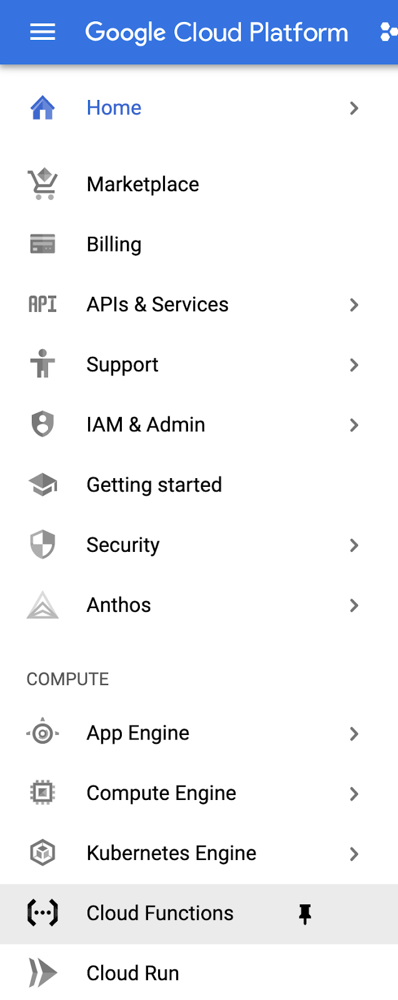
Selecting the thumbtack icon to the right of the Cloud Functions menu item will pin the Cloud Functions page to the top of your main menu.
The first time you visit the Cloud Functions page, the API will be enabled for you. This might take a few seconds.
This tutorial will actually walk you through the process of creating two Cloud Functions: one that uses the default code provided by Google Cloud Platform, and a second with custom Python code.
Choose the Create Function button on the page (the location of the button may be different than pictured, based on whether or not this is your first Cloud Function.)
On the Configuration page, enter the Function name python-hello-world
From the Region dropdown, choose the geographic region that is closest to your location.
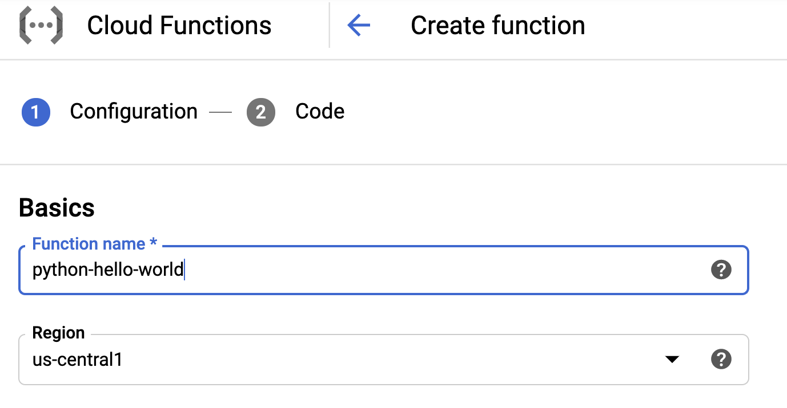
In this tutorial you will create functions that are triggered by HTTP requests. This means that visitors will be able to invoke your function by visiting a URL in a web browser. Ensure that HTTP is selected in the Trigger type dropdown menu.
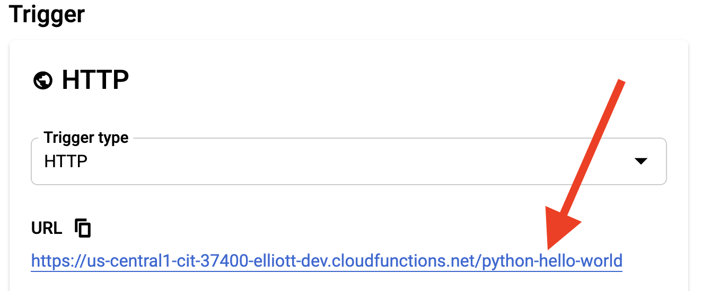
The functions in this tutorial should be made publicly available so that no authentication is needed during their invocation. Choose Allow unauthenticated invocations from the Authentication menu.
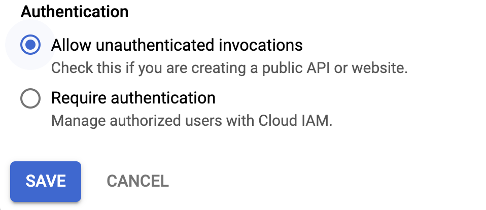
Choose Save and then click Next.
Cloud Functions can be programmed in a variety of programming languages. This tutorial uses Python (currently Python 3.7) for the function's source code.
Choose your Runtime (Python 3.7) from the dropdown.
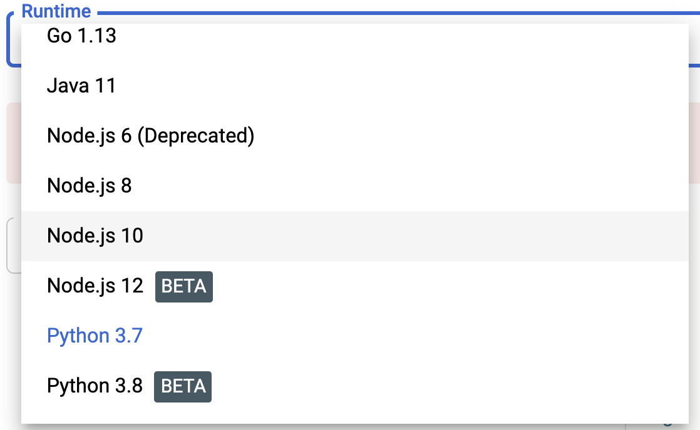
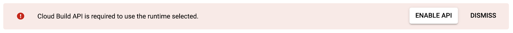
If this is the first function you've created in this project, you will be asked to enable the Cloud Build API. Select the Enable API button and then choose Enable on the page that appears.
You may close the window for the Cloud Build API.
Your Cloud Function requires a specific Python function to run when the function is triggered. By default, the function is named hello_world You may leave the default in place.
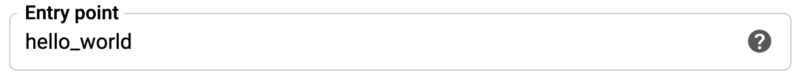
Source code for a Cloud Function can be added from different locations (a .zip file or a Cloud Source repository.) For this Cloud Function, you will use the inline editor to write your code.
Ensure Inline Editor is selected in the Source code dropdown.
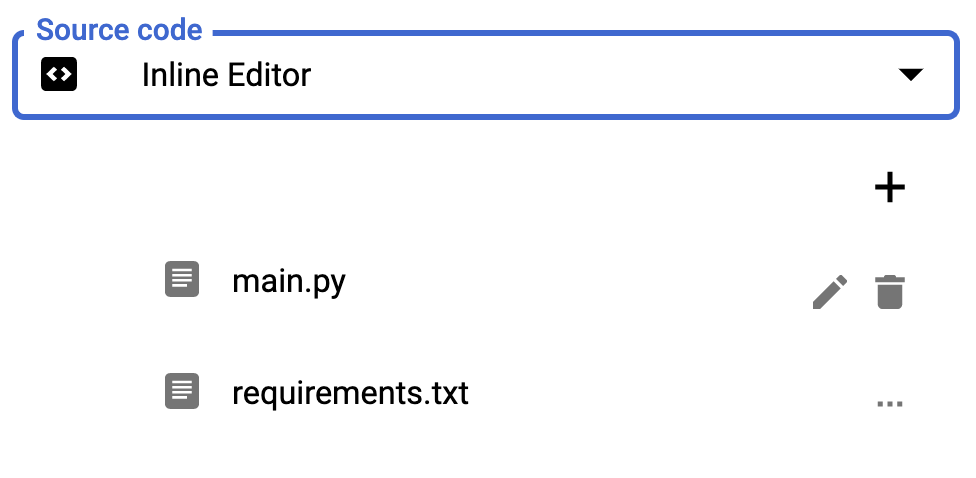
We will use the default code provided in the hello_world(request) function. Take a moment to read through the code to understand its functionality.
This program uses the Python Flask web framework to examine the HTTP request. It collects the JSON values in the request into a variable called request_json
The program then proceeds to examine the incoming arguments from the request to look for a specific argument named message. If a value is found, the function returns that value.
If no message is found in the arguments, the program looks for a key named message in the request_json variable. If a value is found there, the function returns it.
If no message is found in either the request arguments or the request's JSON, the function simply returns the string ‘Hello World'
main.py
def hello_world(request):
"""Responds to any HTTP request.
Args:
request (flask.Request): HTTP request object.
Returns:
The response text or any set of values that can be turned into a
Response object using
`make_response <http://flask.pocoo.org/docs/1.0/api/#flask.Flask.make_response>`.
"""
request_json = request.get_json()
if request.args and 'message' in request.args:
return request.args.get('message')
elif request_json and 'message' in request_json:
return request_json['message']
else:
return f'Hello World!'Now that you have reviewed the code, it's time to deploy our function!
Deploy the function by selecting the Deploy button at the bottom of the window. Deploying the function does the following:
The deployment process may take a few moments (especially if this is the first time a Cloud Function has been deployed.) When the process is complete, you should see a success icon next to the Cloud Function's name in the list of functions.
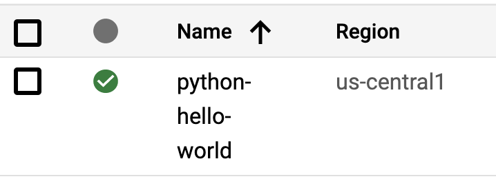
From the list of Cloud Functions, select the name of the Cloud Function to be taken to the Function details screen.
On the Function details screen, choose the tab labeled Trigger.
Because this is a Cloud Function triggered by an HTTP call, the screen will show a URL that will activate your Cloud Function. Select the link provided on the page to run your Cloud Function.
A new window or tab will open that will produce the "Hello World!" output from your source code.
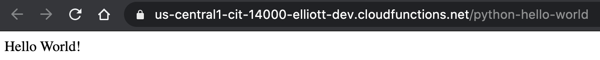
If you see this message in your browser, you have successfully invoked your first Cloud Function!
Return to the window or tab that shows the Function details for your Cloud Function. Choose the Edit link near the top of the page to edit the logic of your function.
The Configuration screen allows you to update the name of the Cloud Function and/or its URL for invocation. You do not need to make any changes on this screen, so choose Next.
You are now presented with the Inline Editor and the original source code of the function.
Update the default return value from the function to customize the message to something other than "Hello World!"
When you have made your updates, select the Deploy button toward the bottom of the window. This will initiate the build process and re-deploy your function. The process will take a few seconds to complete.
If there are no errors in your source code and no issues with deployment you should again see the success icon next to the Cloud Function's name.
Test your function again by selecting the name of the Cloud Function, visiting the Trigger tab, and selecting the provided URL. The output of the Cloud Function should now match the edits you made to the source code.
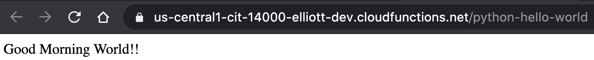
You will now repeat steps 2-7 to create a new Cloud Function. This function will use Python code to collect input from the user (via the querystring) and return a custom pirate name based on the initials provided in the input.
Create a new Google Cloud Function with the following values:
pirate_name_generatormainSelect the Edit button or pencil icon next to the main.py file in the Inline Editor.
Select and delete all of the code that was automatically created. Replace the code with the following (simply copy and paste):
main.py
first_names = ["Lady", "Dirty", "Squidlips", "Bowman", "Buccaneer", "Two Toes", "Sharkbait", "Old", "Peg Leg", "Fluffbucket", "Scallywag", "Bucko", "Dead Man", "Matey", "Jolly", "Stinky", "Bloody", "Mad", "Miss", "Red", "Captain", "Bretheren", "Rapscallion", "Landlubber", "Wench", "Freebooter"]
middle_names = ["Creeper", "Jim", "Storm", "Scruff", "Legs", "O'", "Rat", "Jack", "George", "Head", "Cackle", "Patch", "Bones", "Plank", "Greedy", "Sea", "Mama", "Spike", "Squiffy", "Gold", "Yellow", "Felony", "Eddit", "Bay", "Thomas", "Spot"]
last_names = ["Magoo", "Byrd", "Jackson", "Sparrow", "McCracken", "Jones", "Ned Head", "Bar", "O'Fish", "Kidd", "O'Malley", "Barnacle", "Holystone", "Hornswaggle", "McStinky", "Swashbuckler", "Sea Wolf", "Beard", "Chumbucket", "Rivers", "Morgan", "Tuna Breath", "Three Gates", "Bailey", "the Wrangler", "Of Dark Water"]
alpha = "abcdefghijklmnopqrstuvwxyz"
def main(request):
"""Responds to any HTTP request.
Args:
request (flask.Request): HTTP request object.
Returns:
The response text or any set of values that can be turned into a
Response object using
`make_response <http://flask.pocoo.org/docs/1.0/api/#flask.Flask.make_response>`.
"""
request_json = request.get_json()
if request.args and 'first' in request.args and 'middle' in request.args and 'last' in request.args:
first = name_lookup(request.args['first'], first_names)
middle = name_lookup(request.args['middle'], middle_names)
last = name_lookup(request.args['last'], last_names)
return f'Your pirate name is {first} {middle} {last}.'
else:
return f'We couldn\'t determine your name from the inputs provided. {request.args}'
def name_lookup(input, list):
initial = input[0].lower()
initial_position = alpha.find(initial)
name_part = list[initial_position]
return name_partOnce the above code is pasted into the Inline Editor, choose Deploy.
The code provided to you expects three inputs from the user. Any other amount of input will cause the cloud function to fail and provide a user-friendly error message through the browser.
To provide the user inputs, you will manually append a querystring when calling the cloud function.
To invoke the cloud function, open the URL provided in the Trigger tab. Then copy the following querystring and append it to the end of the URL in the browser:
?first=beth&middle=sharon&last=langWith the URL and querystring together, invoke the cloud function by visiting the URL. The output from the cloud function should read Your pirate name is Dirty Squiffy Barnacle.
Adjust the values in the querystring and test a variety of names. Ensure you keep the key-value pairs intact: your querystring must include exactly three elements, named first, middle, and last.
Congratulations! You've created two Google Cloud Functions.
The Pirate Name Generator could use some work. Consider making any (or all) of the following improvements:
Whatever you do to improve this cloud function, you now have the ability to write programs that can accomplish countless tasks. You can perform calculations, rename files, send notifications or emails, query data sources - the list is virtually endless.
Cloud Functions are most powerful when combined with other cloud technologies. If you're new to cloud development a good place to continue your journey is to explore the possibilities of Google Cloud Storage. Cloud Functions can be invoked by changes to Cloud Storage buckets, so you can write a program that alerts you when a new file is uploaded, for example.
For a bit more advanced functionality, consider reading more about Google Cloud Pub/Sub, which is a service that allows other services to communicate on-demand. A simple example of this might be to send messages to a chat application. More powerful processes include data processing and validation, push notifications, and traffic analysis.